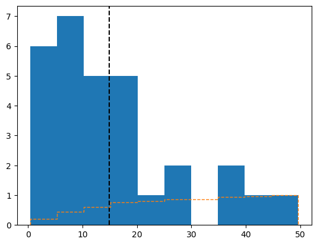
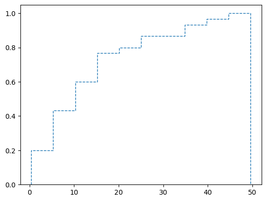

Code
#Import libraries
import pandas as pd
import numpy as np
import matplotlib.pyplot as plt
import seaborn as snsThe foundation for the Bayesian section of the blog
#Import libraries
import pandas as pd
import numpy as np
import matplotlib.pyplot as plt
import seaborn as snsStatistics has long been a subject of great debate because of the way it is implmented. Due to “arbitrary” rules or guidelines that the academic community or business organizations follow in this field, it can be easy to be confused as to why certain numbers matter, if results from experiments actually have genuine impact, and how can we improve of the results we obtained. As well, what do we do when a test results contradicts what a subject matter expert says they expected to happen? Bayesian methods attempt to clear the confusion surrounding statistics. Bayesian methods allow us to incorporate our own knowledge into statistical modeling practices to properly draw conclusions from data. From those conclusions, we can gain direction and insight on what kind of decisions to make to better guide an organization.
Suppose you just moved to a new town. In this town, you would like to take advantage of the public bus system to get to work. You look up online information about the nearest station to you and see that the first bus arrives at 7:00am and there should be subsequent buses every 15 minutes. The first day, you decide to get to the bus station a couple minutes before 7:30 to be sure you make the bus. The bus arrives at 7:32am. The next day, you decided to arrive a couple minutes early again. This time, the bus doesn’t arrive until 7:40am. The third day, you decide to show up right at 7:30am and the bus arrives at the same time as you. With all this variation in arrival time from the bus, can you trust the prediction that the bus arrives every 15 minutes?
In order to solve this problem, you phone a friend who we’ll call Fred. Fred is a statistician so you trust that his insights will help you with determine when would be a good time to arrive at the bus stop given all this variation in data. He tells you that first he’ll need a decent sample size to work with, so that you’ll need to go at least 20 more times to get good data points on the bus arrival time. Then, he would set up what he calls a “hypothesis test” to determine whether or not the true average arrival time of the bus is every 15 minutes. You ask if the hypothesis test will tell him what the true average arrival time would be and Fred says no. It would only tell whether or not it is 15 minutes or not. But, he explains we could use a confidence interval to find a range where 95% of the time the true average would be found.
You walk away from this conversation a little disappointed. You just don’t have time to sit out and record waiting times for that many buses. You want better judgement on when to arrive at the bus station, but not that much. As you wait for the bus again, you meet a girl named Bailey. You two start chatting and you start talking about how you can best estimate when to arrive at the bus station so you don’t have to wait very long but also won’t miss your bus. She asks if this is your first time riding a bus to work and you explain that in your old town you used to ride their bus system as well. She asks if the old town is similar in size as this new town and you say yes. She then explains that you can just use your “prior” knowledge of how frequently buses arrived and how long you waited to help you in your approximation of bus arrival time, with the new knowledge of the current bus system. Essentially, she explains that you can systematically update your beliefs each day based on new data you experience (when the bus arrives/how long you wait). Thanks to this way of thinking, you can always know a plausible range of values for how long you’ll be waiting and not just an average.
You explain to her your data points so far (2 mins, 12 mins, 0 mins) and say that at most, in your old town, arriving a couple of minutes before expected arrival time of the bus yielded on averag a wait time of about 6 mins. She explains to you that this will be your benchmark prior, that you expect to wait on average about 6 mins with some amount of variance in wait time. Now, even with just 3 data points, we can update this belief of 6 mins to align it what is actually the average and distribution of wait time for the bus. With waiting 2 mins, we would believe the average to be a little lower than 6 mins. After the 12 mins wait, we could say that we believe the average to be closer to 6-7 mins. With 0 mins, we can update our belief to be less than 6 mins.
This all sounds very intuitive and easy for you… so you ask if this is even a viable scientific method of measuring averages, variance, and in general quantifying your uncertainty? She says that it is! All thanks to Bayesian inference.
The example above is a major simplification of the actual mathematical implementation of Bayesian inference. However, it does capture the idea that there is a way to update our belief in something by drawing on past data (prior belief) and updating that belief with new data that we observe, thus obtaining a a new distribution of uncertainty we use in judgements/calculations. The formula for this kind of thinking is shown below.
We’ll break down the formula as follows.
np.random.seed(42)
np.random.poisson(lam=3, size=30)NameError: name 'np' is not definedbus_times = np.random.exponential(15, 30)plt.hist(bus_times)
plt.axvline(x=bus_times.mean(), color='black', linestyle='dashed')
plt.hist(bus_times, cumulative=True, linestyle='dashed', density = True, histtype='step');
plt.hist(bus_times, cumulative=True, linestyle='dashed', density = True, histtype='step');
np.random.normal(loc=15, scale=5, size=30)array([24.70768916, 13.69915225, 7.70262465, 12.50984248, 19.91917384,
14.19003404, 14.79596696, 13.94864534, 12.33791079, 16.2093166 ,
18.2745666 , 16.28247189, 12.98810549, 13.04995567, 26.59331935,
13.77914001, 9.87080984, 11.53593212, 22.25553859, 13.43176546,
16.90729668, 15.40166026, 12.28329708, 13.51451858, 19.02199068,
25.06411778, 15.83245462, 23.38034683, 17.81872343, 11.74931218])bus_timesarray([ 9.94780641, 9.49718272, 21.94353187, 14.43235363, 5.53168298,
4.56829551, 18.37460275, 19.98077731, 30.07312976, 1.96304858,
1.8255759 , 3.17128401, 0.95175978, 4.88946946, 1.2898627 ,
19.80629142, 5.82282514, 16.48227623, 21.57035029, 7.33622781,
0.56891505, 0.05800917, 39.49920522, 32.23018656, 51.58192211,
18.90982217, 0.71897336, 27.39496168, 46.37839066, 47.90536189])